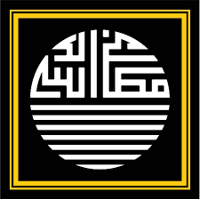

Organisasi Pelajar Pondok Pesantren Matlabus Salik
Beranda
Profil
Kegiatan
Aspirasi
Login
Selamat Datang di Website OP3 Al-Matlab
OP3 Tak Akan Pernah Mati
Kenali Kami
SELAMAT DATANG DI ORGANISASI PONDOK PESANTREN (OP3) ALMATLAB
MASA BAKTI 2026
PELATIHAN KEPEMIMPINAN SEJAK DINI
Visi & Misi
Memancarkan Pendidikan Islam Dengan Mempersiapkan Kader Islam Arif Billah.
Mengeluarkan sebanyak-banyaknya orang yang cakap serta tinggi kepemahamannya dengan agama Islam.
Rajin berbakti, beramal, dan bermasyarakat berdasarkan takwa kepada Allah.
Sehingga menjadi anggota masyarakat yang beramal, berilmu, dan bertakwa.